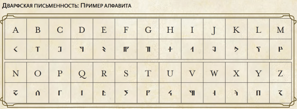
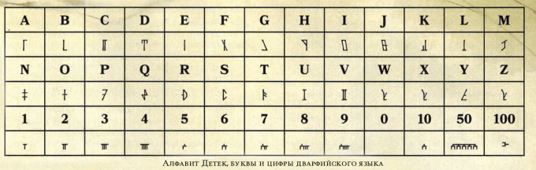
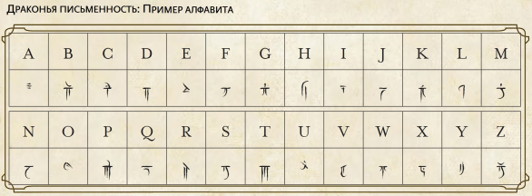
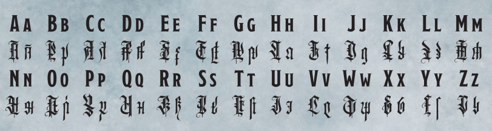
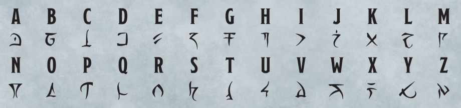
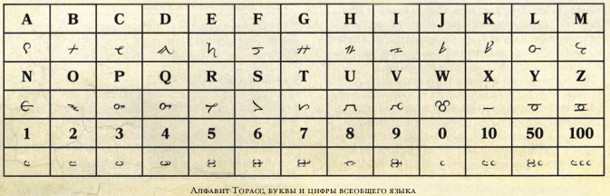
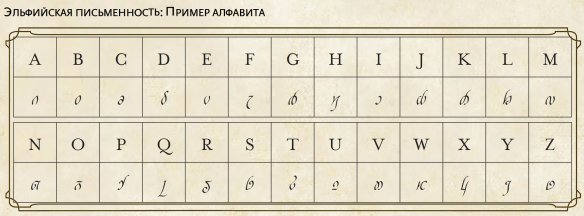
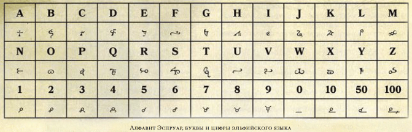

- Источник: «Player's Handbook»
Ваша раса указывает языки, на которых ваш персонаж может говорить по умолчанию, а предыстория может дать ещё несколько языков на выбор.
Запишите эти языки на листе персонажа. Выберите языки из таблицы обычных языков или из тех, что считаются обычными в вашей компании. С разрешения Мастера, вы можете выбрать язык из таблицы экзотических языков или тайный язык, такой как жаргон воров или язык друидов.
Некоторые из этих языков на деле являются семействами языков с многочисленными диалектами. Например, Первичный язык включает диалекты Акван, Ауран, Игнан, и Терран, по одному на каждый из четырёх стихийных планов. Существа, говорящие на разных диалектах одного языка могут общаться между собой.
ОБЫЧНЫЕ ЯЗЫКИ
Язык |
Типичный представитель |
Письменность |
Великаний |
Огры, великаны |
Дварфская |
Гномий |
Гномы |
Дварфская |
Гоблинский |
Гоблиноиды |
Дварфская |
Дварфский |
Дварфы |
Дварфская |
Общий |
Люди |
Общая |
Орочий |
Орки |
Дварфская |
Полуросликов |
Полурослики |
Общая |
Эльфийский |
Эльфы |
Эльфийская |
ЭКЗОТИЧЕСКИЕ ЯЗЫКИ
Язык |
Типичный представитель |
Письменность |
Бездны |
Демоны |
Инфернальная |
Глубинная Речь |
Иллитиды, бехолдеры |
— |
Драконий |
Драконы, драконорождённые |
Драконья |
Инфернальный |
Дьяволы |
Инфернальная |
Небесный |
Небожители |
Небесная |
Первичный |
Элементали |
Дварфская |
Подземный |
Купцы Подземья |
Эльфийская |
Сильван |
Фейские существа |
Эльфийская |
ДВАРФИЙСКАЯ ПИСЬМЕННОСТЬ (PHB)

ДВАРФИЙСКАЯ ПИСЬМЕННОСТЬ (SCAG)

ДРАКОНЬЯ ПИСЬМЕННОСТЬ (PHB)

ИНФЕРНАЛЬНАЯ ПИСЬМЕННОСТЬ (BGDIA)
ВАРИАНТ №1

ВАРИАНТ №2

ОБЩАЯ ПИСЬМЕННОСТЬ (SCAG)

ЭЛЬФИЙСКАЯ ПИСЬМЕННОСТЬ (PHB)

ЭЛЬФИЙСКАЯ ПИСЬМЕННОСТЬ (SCAG)

экзотические Языки, упоминаемые в различных источниках
ЯЗЫКИ Acquisition Incorporated
Язык |
Типичный представитель |
Письменность |
Язык глубинных воронов |
Глубинные вороны |
— |
ЯЗЫКИ Explorer’s Guide to Wildemount
Язык |
Типичный представитель |
Письменность |
Земнийский |
— |
— |
Маркизиский |
— |
— |
Науш |
— |
— |
Земнийский
На этом древнем языке говорили жители Земниаза в эпоху Арканума. Эта древняя культура давно пала, но её язык и её народ продолжают жить в Двендальской империи. Многие древние свитки были написаны на земнийском, но сейчас на этом языке в основном говорят фермеры, так как Общий является языком империи по умолчанию.
Маркизиский
Звериное побережье было заселено колонистами из засушливых земель Марке, и их язык сейчас занимает необычное положение в Конкорде Кловис. Это язык высшего общества, так как многие представители элиты Кловиса происходят от маркизцев, но это также язык пиратов, поскольку бесчисленное множество маркизцев из низших классов оставили Конкорд и образовали Пирующих пиратов.
Науш
Первоначально на нем говорили жители островов Ки’Нау, уроженцы Звериного побережья, науш-процветающий язык в многокультурных городах Конкорда Кловис. Даже моряки, которые говорят только на Общем, имеют в своём морском жаргоне десятки слов на Науше.
ЯЗЫКИ Eberron: Rising from the Last War
Язык |
Типичный представитель |
Письменность |
Даэлькиров |
Аберрации, обитатели Ксориата |
Даэлькиров |
Куори |
Вдохновлённые, калаштары, куори |
Куори |
Первичный |
Элементали |
Первичная |
Риедранский |
жители Сарлоны |
Общая |
Язык Даэлькиров — это язык даэлькиров и их созданий, а также других обитателей плана Ксориат. Даэлькиры принесли свой язык с собой из Ксориата, когда впервые вторглись в Эберрон.
Язык Даэлькиров является прародителем языком Глубинной Речи.
ЯЗЫКИ Guildmasters’ Guide to Ravnica
Язык |
Типичный представитель |
Письменность |
Великаний |
Огры, великаны |
Минотавров |
Краулов |
Краул, краул–воин, краул–жрец смерти, лич Девкарин |
Краулов |
Локсодоний |
Локсодоны |
Эльфийская |
Мерфолков |
Мерфолк |
Мерфолков |
Минотавров |
Минотавры |
Минотавров |
Ведалкенов |
Ведалкены |
Ведалкенов |
Язык Ведалкенов
Язык Ведалкенов известен своими техническими трактатами и каталогами знаний о мире природы и Эфире, который пронизывает его.
ЯЗЫКИ Hoard of the Dragon Queen
Язык |
Типичный представитель |
Письменность |
Нетерезский |
— |
Драконья |
ЯЗЫКИ Icewind Dale: Rime of the Frostmaiden
Язык |
Типичный представитель |
Письменность |
Лоросс |
— |
Драконья |
Лоросс
Язык, на котором говорили Нетерильцы - является мёртвым языком. Очень немногие существа в современности знают о нём, не говоря уже о том, чтобы общаться на нём. Лоросс использовал драконий алфавит в своей письменной форме, в то время как разговорный язык имел много общего с Эльфийским из-за культурного влияния эльфов на цивилизацию Нетерила. Персонаж, говорящий на Эльфийском, может понять, что говорит существо, говорящее на Лороссе, и наоборот. Персонаж с предысторией Мудреца или Учёного затворника, или колдун с воззванием «Глаза хранителя рун», могут переводить написанный Лоросс без проверки характеристик.
ЯЗЫКИ Monster Manual
Язык |
Типичный представитель |
Письменность |
Гитский |
Гитъянки, Гитцераи |
Тир’су |
Гноллий |
Гноллы |
— |
Модронский |
Модроны |
— |
Отиджский |
Отиджи |
— |
Сахуагинский |
Сахуагины |
— |
Слаадский |
Слаады |
— |
Три-кринский |
Три-крины |
— |
Троглодитский |
Троглодиты |
— |
язык Ааракокр |
Ааракокры |
— |
язык Бурых увальней |
Бурые увальни |
— |
язык Воргов |
Ворги |
— |
язык Греллов |
Греллы |
— |
язык Йети |
Йети |
— |
язык Гигантских лосей |
Гигантских лоси |
— |
язык Гигантских орлов |
Гигантских орлы |
— |
язык Гигантских сов |
Гигантских совы |
— |
язык Жаболюдов |
Жаболюды |
— |
язык Крюкастых ужасов |
Крюкастый ужас |
— |
язык Мерцающих псов |
Мерцающие псы |
— |
язык Полярных волков |
Полярные волки |
— |
Алфавит гитов
Гиты используют письменность, состоящую из буквенных символов, объединённых в круглые кластеры, называемые тир’су. Каждая «спица» такого колеса соответствует букве алфавита. Каждый кластер символов – это слово. Множество тир’су формируют фразы и предложения.
И гитъянки, и гитцераи говорят на Гитском, но у каждой расы свои чётко отличимые диалект и акцент. Также у них различаются способы написания тир’су.
Гитъянки пишут тир’су по часовой стрелке, начиная с вершины. Гитцераи используют те же символы, но пишут свои тир’су против часовой стрелки, начиная снизу.
ЯЗЫКИ Mythic Odysseys of Theros
Язык |
Типичный представитель |
Письменность |
Леонинов |
Леонины |
Общая |
ЭКЗОТИЧЕСКИЕ Mordenkainen’s Tome of Foes
Язык |
Типичный представитель |
Письменность |
Крутиков |
Крутики |
— |
ЯЗЫКИ Out of the Abyss
Язык |
Типичный представитель |
Письменность |
язык Икситксачитлов |
Икситксачитлы |
— |
ЯЗЫКИ Rise of Tiamat
Язык |
Типичный представитель |
Письменность |
язык Ледяных жаб |
Ледяные жабы |
— |
ЯЗЫКИ Storm King’s Thunder
Язык |
Типичный представитель |
Письменность |
Ботхи |
Утгардтские племена |
— |
Йикариа |
Яколюди |
— |
ЯЗЫКИ Tales from the Yawning Portal
Язык |
Типичный представитель |
Письменность |
Олман |
Калка-Килла |
— |
ЯЗЫКИ Volo’s Guide to Monsters
Язык |
Типичный представитель |
Письменность |
Куалит |
Свежеватели разума |
Куалит |
язык Вегепигмеев |
Вегепигмеи |
|
язык Грунгов |
Грунги |
— |
язык Тлинкалли |
Тлинкалли |
— |
Куалит
«Письменность» свежевателей разума, известная как Куалит, это не просто набор символов, представляющих звуки или идеи. Надпись на Куалите отражает мысли создателя и псионически передает их свежевателю, который позже читает надпись, прикоснувшись к ней своими щупальцами. Свежеватели разума пишут на Куалите, псионически печатая свои сообщения на немагическом, неживом материале, который держат или гладят щупальцами. Написание вызывает незначительные изменения поверхности объекта, а царапание или гниение материала могут затереть или разрушить надпись.
Выражение на Куалите состоит из четырех–строчных строф, упакованных в пересекающиеся блоки, создающие сложные узоры, нерасшифровываемые для других существ. Однако, любой, кто дотронется до надписи на Куалите, может получить фрагментальное представление о многослойных мыслях, в нем содержащихся. Не иллитид, который хочет понять надпись на Куалите, может совершить проверку Интеллекта (Сл зависит от сложности содержащихся мыслей) и попробовать выявить часть значения надписи. Множественные успешные попытки могут раскрыть различные стороны иллитида автора, значение надписи и то, для кого она написана. Проваленная попытка заканчивается страшной головной болью и в особых случаях безумием. Заклинание понимание языков [comprehend languages] почти эквивалентно тому, что бы прочитал из него свежеватель разума.
Комментарии
Понимаю что скорее всего нет, но мало ли
,
Минус: тут не у всех языков особенности. Например, Три-Кринский язык only устный, и для передачи сложной информации и слов они используют свою пасть и усики, что сложно для восприятия и невозможным для повторения другим расам.